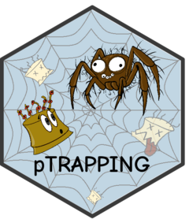

Single volcano plot for TRAP-seq or RNA-seq differential expression results
Source:R/ptrap_volcano.R
ptrap_volcano.RdTakes a single tibble produced by ptrap_de(), limma_de()
or similar and returns a classic volcano plot (logFC on the x-axis, -log10(FDR) on the y-axis).
Non-significant genes are shown in grey; genes classified as "UP" or
"DOWN" in the diffexpressed column are highlighted with distinct fill
colours and labelled with their gene identifier. Dashed threshold lines are
drawn at ±lfc_threshold (vertical) and -log10(fdr_threshold)
(horizontal).
Usage
ptrap_volcano(
de_result,
lfc_threshold = 1,
fdr_threshold = 0.05,
gene_col = "Gene",
treatment_col = "Treatment",
region_col = "BrainRegion",
colors = NULL,
point_size = 3.5,
point_alpha = 0.7,
max_overlaps = 20,
title = NULL
)Arguments
- de_result
A tibble returned by
ptrap_de(), containing at minimum columnsGene(orgene_col),logFC,FDR, anddiffexpressed.- lfc_threshold
Minimum absolute log2 fold change used to draw the vertical threshold lines. Should match the value used in
ptrap_de(). Default is1.- fdr_threshold
FDR cutoff used to draw the horizontal threshold line (plotted as
-log10(fdr_threshold)). Should match the value used inptrap_de(). Default is0.05.- gene_col
Name of the column containing gene identifiers. Default is
"Gene".- treatment_col
Name of the column containing the treatment label. Used to build the default plot title. Default is
"Treatment".- region_col
Name of the column containing the brain region label. Used to build the default plot title. Default is
"BrainRegion".- colors
A named character vector mapping
"UP"and"DOWN"to colours. IfNULL(default), a colourblind-friendly palette is used ("#D55E00"for"UP","#0072B2"for"DOWN").- point_size
Size of the points. Default is
3.5.- point_alpha
Opacity of the highlighted (significant) points. Default is
0.7.- max_overlaps
Passed to
ggrepel::geom_text_repel(). Controls how many overlapping labels are suppressed. Default is20.- title
Plot title. If
NULL(default), a title is auto-generated from the brain region and treatment labels found inde_result.
Value
A ggplot2::ggplot() object.
Examples
if (FALSE) { # \dontrun{
res <- ptrap_de(
counts_mat = counts_mat,
sample_df = sample_df,
gene_ids = gene_ids,
region_name = "POA",
treatment_name = "pb"
)
# Default plot
ptrap_volcano(res)
# Custom thresholds and colours
ptrap_volcano(res,
lfc_threshold = 0.5,
fdr_threshold = 0.1,
colors = c("UP" = "#E69F00", "DOWN" = "#56B4E9"))
} # }